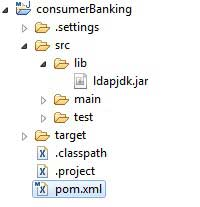

# 9-外部依赖
# Maven - 外部依赖
现在，如你所知道的，Maven的依赖管理使用的是Maven仓库的概念。但是如果在远程仓库和中央仓库中，依赖不能被满足，如何解决呢? Maven 使用外部依赖的概念来解决这个问题。
例如，让我们对在 Maven - 创建工程 部分创建的项目做以下修改：
- 在 src 文件夹下添加 lib 文件夹
- 复制任何 jar 文件到 lib 文件夹下。我们使用的是 ldapjdk.jar ，它是为 LDAP 操作的一个帮助库
现在，我们的工程结构应该像下图一样：

现在你有了自己的工程库（library），通常情况下它会包含一些任何仓库无法使用，并且 maven 也无法下载的 jar 文件。如果你的代码正在使用这个库，那么 Maven 的构建过程将会失败，因为在编译阶段它不能下载或者引用这个库。
为了处理这种情况，让我们用以下方式，将这个外部依赖添加到 maven pom.xml 中。
<project xmlns="http://maven.apache.org/POM/4.0.0"
xmlns:xsi="http://www.w3.org/2001/XMLSchema-instance"
xsi:schemaLocation="http://maven.apache.org/POM/4.0.0
http://maven.apache.org/maven-v4_0_0.xsd">
<modelVersion>4.0.0</modelVersion>
<groupId>com.companyname.bank</groupId>
<artifactId>consumerBanking</artifactId>
<packaging>jar</packaging>
<version>1.0-SNAPSHOT</version>
<name>consumerBanking</name>
<url>http://maven.apache.org</url>
<dependencies>
<dependency>
<groupId>junit</groupId>
<artifactId>junit</artifactId>
<version>3.8.1</version>
<scope>test</scope>
</dependency>
<dependency>
<groupId>ldapjdk</groupId>
<artifactId>ldapjdk</artifactId>
<scope>system</scope>
<version>1.0</version>
<systemPath>${basedir}\src\lib\ldapjdk.jar</systemPath>
</dependency>
</dependencies>
</project>
1
2
3
4
5
6
7
8
9
10
11
12
13
14
15
16
17
18
19
20
21
22
23
24
25
26
27
28
29
30
2
3
4
5
6
7
8
9
10
11
12
13
14
15
16
17
18
19
20
21
22
23
24
25
26
27
28
29
30
上例中， <dependencies> 的第二个 <dependency> 元素 , 阐明了外部依赖的关键概念。
- 外部依赖（library jar location）能够像其他依赖一样在 pom.xml 中配置。
- 指定 groupId 为 library 的名称。
- 指定 artifactId 为 library 的名称。
- 指定作用域（scope）为系统。
- 指定相对于工程位置的系统路径。
希望现在你懂得了有关外部依赖的知识，你将能够在你的 Maven 工程中指定外部依赖。